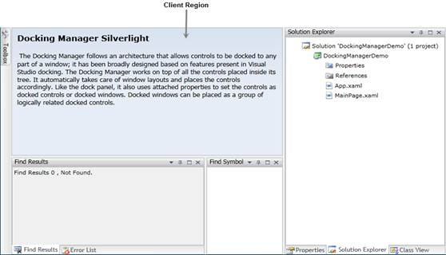

DockingManager provides option for the users to control the hosting of a Client control. A control can be displayed in client area by setting SideInDockedMode to None. The main purpose of client control is resizing and repositioning based on other docking windows.
|
[XAML]
<TextBlock x:Name="textBlock" TextWrapping="Wrap" syncfusion:DockingManager.SideInDockedMode="None" Margin="10"> ... </TextBlock> |
|
[C#]
DockingManager.SetSideInDockedMode(textBlock,Dock.None); |

Figure 94: DockingManager Hosting Client Control